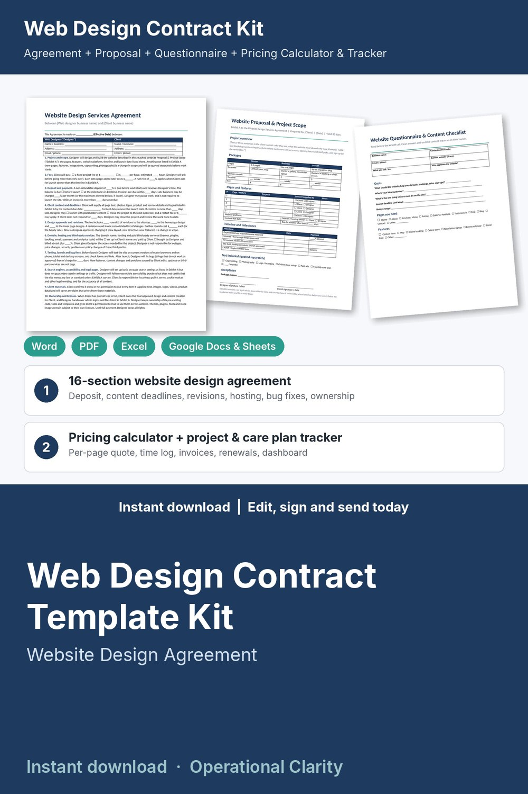

Web Design Contract Template Kit

Get the deposit, the content on time and a clean launch: a complete web design contract kit with a working pricing calculator, project tracker and care plan / renewal tracker, not just a Word file.
WHAT'S INSIDE
- Website Design Services Agreement (Word + PDF): 16 plain-English sections, 2 pages. Project and scope (Exhibit A), fixed or hourly fees, extra page price, rush fee, deposit and payment, late fee, client content and deadlines (placeholder or reschedule, restart fee), design approvals and revision rounds, domain, hosting and third-party services, testing, launch and bug-fix window, search engines, accessibility and legal pages, client materials, ownership and licenses on full payment, optional monthly care plan, portfolio and footer credit, confidentiality and passwords, independent contractor, cancellation and kill fee, limitation of liability, governing law, signatures.
- Website Proposal & Project Scope (Word + PDF): 3 packages (Starter / Business / Growth), pages and features table, platform, content due date, bug-fix window, milestones and payments, what's not included. Attach it to the agreement as Exhibit A.
- Website Questionnaire & Content Checklist (Word + PDF): goals, pages and features checklists, domain / hosting / email logins table, look and feel, content checklist with who provides it and due dates.
- Change Request Form, 14-point Website Launch Checklist, and Website Launch Approval & Handoff (Word + PDF).
- Web Design Pricing Calculator & Project Tracker (Excel / Google Sheets, 10 tabs):
* Rate Planner: your minimum hourly rate from income goal, expenses, taxes and billable hours
* Quote Builder: pages and features x quantity x hours, contingency, rush fee, expenses, rounded fixed fee, effective hourly rate, deposit, extra page price, extra revision round price and a monthly care plan price
* Projects: content due date and received, revision rounds included vs used, hours vs budget, launch date, invoiced, paid, balance, earned per hour, alerts (OVER BUDGET / WAITING ON CONTENT / EXTRA REVISIONS / DUE SOON / PAST DUE / 80% USED)
* Care Plans & Renewals: monthly care clients, hosting, domain and license renewal dates, RENEWS SOON / EXPIRED alerts
* Time Log and Expenses (billable Y/N, markup)
* Invoices: due dates, days overdue, late fee, PAID / OPEN / PARTIAL / OVERDUE status
* Printable Invoice: pick a project and dates, billable hours by task and expenses fill in
* Dashboard: invoiced, collected, outstanding, overdue, unbilled work, monthly care plan revenue, renewals due, month-by-month chart
- START HERE guide (PDF)
HOW IT WORKS
1. Set your rate in the Rate Planner and your deposit and revision rules on Settings.
2. Send the Website Questionnaire, then price the site in the Quote Builder.
3. Send the Proposal; when the client says yes, fill in the Agreement, sign and invoice the deposit.
4. Track content and hours on Projects, use the Change Request Form for anything new, run the Launch Checklist, get the Launch Approval signed, bill the balance and hand over the logins.
5. Add care plan clients and renewal dates so nothing expires by surprise.
Example data (4 sample clients) shows how it all connects; delete it and type your own. Yellow cells = type here, green cells = calculated.
FORMATS
- Word .docx (edit in Microsoft Word, Google Docs, Pages or LibreOffice) + PDF, US Letter
- Excel .xlsx (works in Excel and Google Sheets)
This is an instant digital download, no physical item will be shipped.
Editable template, not legal advice. Laws differ by state and country; have it reviewed by a local attorney before you use it.